정보통신산업기사 (2003-08-31 기출문제)
1과목: 디지털전자회로
1. 다음은 에미터폴로워(emitter follower)의 임피던스 특성이다. 옳은 것은?
- 입력임피던스와 출력임피던스 모두작다.
- 입력임피던스와 출력임피던스 모두크다.
- 입력임피던스는 크고 출력임피던스는 작다.
- 입력임피던스는 작고 출력임피던스는 크다.
(정답률: 알수없음)

2. 제너 다이오드를 사용하는 회로는?
- 증폭회로
- 검파회로
- 전압안정회로
- 저주파발진회로
(정답률: 알수없음)
3. 그림의 회로 명칭은?
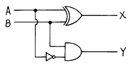
- 가산기
- RS 플립플롭
- 감산기
- 반감산기
(정답률: 알수없음)
4. LC 동조 발진기에 비해 수정 발진기의 특징으로 잘못 설명한 것은?
- 안정도가 높다.
- Q가 비교적 크다.
- 발진 주파수를 가변하기 어렵다.
- 저주파 발진기로 적합하다.
(정답률: 알수없음)
5. 이득 100인 저주파 증폭기가 10[%]의 왜율을 가지고 있을 때 이것을 1[%]로 개선하기 위해서는 얼마의 전압 부궤환을 걸어 주어야 하는가?
- 1
- 0.9
- 0.09
- 0.009
(정답률: 알수없음)
6. B급 증폭기의 최대 효율을 백분율로 표시하면?
- 25(%)
- 48.5(%)
- 78.5(%)
- 98.5(%)
(정답률: 알수없음)
7. 트랜지스터가 차단과 포화에서 동작될 때 무엇처럼 동작하는가?
- 스위치
- 선형증폭기
- 가변용량
- 가변저항
(정답률: 알수없음)
8. 그림과 같은 회로의 입력에 정현파(Vi)를 인가했을 때의 전달 특성은? (단, 다이오드의 동작시 저항성분은 Rf이며, Rf ＜ R 이다.)
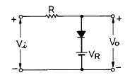
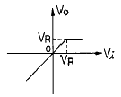
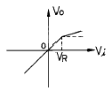
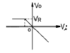
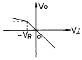
(정답률: 알수없음)
9. JK 플립플롭을 사용하여 D형 플립플롭을 만들려면 외부결선은 어떻게 하는 것이 옳은가?
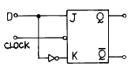
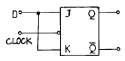
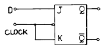
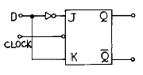
(정답률: 알수없음)
10. 다이오드 D1, D2의 항복 전압을 Vz라면 회로에서 D1, D2가 모두 차단(OFF)될 조건으로 옳은 것은?
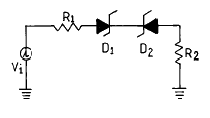
- Vi = Vz
- Vi = -Vz
- -Vz ＜ Vi ＜ Vz
- -Vz ＞ Vi ＞ Vz
(정답률: 알수없음)
11. 그림과 같은 카르노도(Karnaugh Map)에서 얻어지는 부울대수식은?
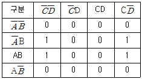
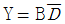
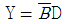
- Y = AB
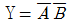
(정답률: 알수없음)
12. 그림과 같은 이상적인 연산 증폭기에서 Vs/Is는?
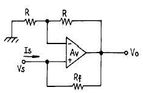
- -Rf
- R + Rf
- -R
- R - Rf
(정답률: 알수없음)
13. 그림과 같은 논리 회로의 출력은?
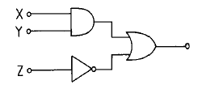
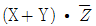
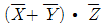
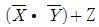
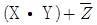
(정답률: 알수없음)
14. FET에서 VGS=0.7[V]로 일정히 유지하고 VDS를 6[V]에서 10[V]로 변화시켰을 때 ID가 10[㎃]에서 12[㎃]로 변하였다. 드레인 저항(rd)은 얼마인가?
- 0.5[㏀]
- 0.5[㏁]
- 2[㏀]
- 8[㏀]
(정답률: 알수없음)
15. 주파수변조에서 변조지수가 6이고, 신호의 최고주파수를 10[kHz]라고 했을 때 그 소요 대역폭은 몇 [kHz]인가? (단, 광대역 FM이라 가정한다.)
- 20
- 60
- 100
- 120
(정답률: 알수없음)
16. 그림의 회로는 어떤 논리 동작을 하는가?
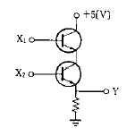
- AND
- OR
- NOR
- NAND
(정답률: 알수없음)
17. 캐패시터로 필터링된 전파정류기의 부하저항이 적게 된다면 리플 전압은?
- 감소한다.
- 증가한다.
- 영향이 없다.
- 다른 주파수를 갖는다.
(정답률: 알수없음)
18. R과 C에 의하여 발진주파수가 결정되는 발진회로에서 RC시정수를 작게 하면 발진파형은 어떤 변화가 생기는가?
- 발진주파수가 낮아진다.
- 발진주파수가 높아진다.
- 아무런 변화가 없다.
- 펄스의 점유율(duty ratio)이 많이 커진다.
(정답률: 알수없음)
19. 전가산기(full adder)의 구조는?
- 입력 2개, 출력 4개로 구성된다.
- 입력 2개, 출력 3개로 구성된다.
- 입력 3개, 출력 2개로 구성된다.
- 입력 3개, 출력 3개로 구성된다.
(정답률: 알수없음)
20. 900[KHz]의 반송파를 5[KHz]의 신호주파수로 진폭변조한 경우 피변조파에 나타나는 주파수 성분이 아닌 것은?
- 900[KHz]
- 895[KHz]
- 9⑤[KHz]
- 5[KHz]
(정답률: 알수없음)
2과목: 정보통신기기
21. 역 다중화기(Inverse multiplexer)의 특징이 아닌 것은?
- 광대역 회선을 이용한다.
- 순환기억장치가 있다.
- 시분할 다중화기의 역동작을 수행한다.
- 바이플렉서(biplexer)라고도 한다.
(정답률: 알수없음)
22. ATM 교환방식의 특징이 아닌 것은?
- 비동기 방식이다.
- 다양한 속도를 제공한다.
- 음성, 화상, 데이터 등의 서비스를 제공할 수 있다.
- 정보의 지연이 일정하다.
(정답률: 알수없음)
23. 다음 중 CATV의 헤드 엔드(Head-end)의 구성요소가 아닌 것은?
- 수신 증폭기
- 혼합 분배기
- 변조기
- 간선 증폭기
(정답률: 알수없음)
24. 통신 채널을 통해 정보를 전송하는 방법 중 반이중전송방식에 대한 올바른 설명은?
- 언제나 한쪽 방향으로만 정보전송
- 언제나 양쪽 방향으로만 정보전송
- 2선식 방식으로 양쪽방향으로 전송이 가능하나 동시송수신은 불가능
- 양쪽 방향으로 동시에 송수신할 수 있고 4선식 구성방식
(정답률: 알수없음)
25. 다음 중 CCTV와 같은 용도로 사용되는 시스템은 어느 것인가?
- CATV
- VRS
- HDTV
- ITV
(정답률: 알수없음)
26. 변복조기(MODEM)의 송신부 구성요소에 해당하는 것은?
- 데이터부호화기(DATA ENCODER)
- 디모듈레이터(DEMODULATOR)
- 데이터복호화기(DATA DECODER)
- 반송파검출기(CARRIER DETECTOR CIRCUITS)
(정답률: 알수없음)
27. FM수신기는 신호파가 도달하지 않을 때 진폭제한기가 동작하지 않으므로 반송파가 없으면 큰 잡음이 생긴다. 그래서 반송파가 없을 때 저주파 증폭기의 동작을 멈추게하는 기능을 갖는 것은?
- 주파수 변별기
- 디엠파시스 회로
- 자동 주파수 제어부
- 스켈치 회로
(정답률: 알수없음)
28. DSU(Digital Service Unit)의 기능이 아닌 것은?
- 신호 파형의 변환
- 전송속도의 변환
- 제어 신호의 삽입
- 데이터의 집중화
(정답률: 알수없음)
29. 정보 단말기 기능 중 전송제어 기능이 아닌 것은?
- 입출력 제어 기능
- 오류 제어 기능
- 출력 변환 기능
- 송수신 제어 기능
(정답률: 64%)
30. 위성통신에서 지상통신계의 기본구성과 관계 없는 것은?
- 하향방향채널
- 통신망제어 프로세서
- 집선장치
- 통신망 관리센터의 터미날, 호스트
(정답률: 알수없음)
31. 전화기의 통화 회로를 구성하는 요소에 속하는 것은?
- 유도 선륜
- 훅 스위치
- 자석발전기
- 벨(Bell)
(정답률: 알수없음)
32. 다음중 전자교환기의 통화로계의 구성장치가 아닌 것은?
- 통화로(시분할스위치)
- 망동기장치
- 가입자 정합장치
- 시스템제어장치
(정답률: 알수없음)
33. 통신회선을 직접 보유하거나 공중통신사업자의 회선을 임차 또는 이용하여 단순한 전송기능 이상의 정보의 축적, 가공, 변환처리 등을 행하는 정보통신 서비스는?
- LAN
- VAN
- CATV
- HDTV
(정답률: 알수없음)
34. 컴퓨터에서 처리된 자료를 인간의 해독 가능한 형태인 문자나 도형으로 변환하여 마이크로 필름에 기록하는 장치는?
- CAM
- CAR
- COM
- OCR
(정답률: 알수없음)
35. 몇 개의 단말기들이 하나의 통신회선을 통하여 결합된 형태로 신호를 전송하는 방법은?
- 다중화
- 디지털 서비스 유니트
- 분산화
- 분할화
(정답률: 알수없음)
36. TV 방송전파를 이용하여 TV 방송과 함께 문자 또는 도형 형태의 정보제공이 가능한 뉴미디어는?
- 텔리텍스
- 텔리텍스트
- 정지화방송
- 비디오텍스
(정답률: 알수없음)
37. 컴퓨터시스템에서 주어진 기억용량 보다 큰 프로그램을 사용할 수 있는 기법은?
- Virtual Memory
- Cache Memory
- Associative Memory
- Dynamic Memory
(정답률: 알수없음)
38. 이동통신 시스템에서 다중경로 전파에 의하여 수신 신호의 진폭이 시간에 따라 변화하는 현상을 무엇이라 하는가?
- 페이딩
- 동일 채널 간섭
- 지연 확산
- 인접 채널 간섭
(정답률: 알수없음)
39. 위성통신의 설명으로 틀린 것은?
- 정지위성은 적도상공 35,800km에 있다.
- 통신위성이나 방송위성에는 중계기 (Transponder)가 탑재 되어 있다.
- 지구국에서 소전력의 감쇄가 작은 고주파를 송신하고 위성은 대전력용인 감쇄가 큰 고주파를 사용한다.
- 위성통신 범위 내에는 거리에 관계없이 회선 사용료가 일정하므로 장거리통신에 경제적이다.
(정답률: 알수없음)
40. 비디오 텍스의 국제표준 기술방식이 아닌 것은?
- 알파 모자이크 방식
- 알파 지오 메트릭 방식
- 알파 캡틴 방식
- 알파 포토 그래픽 방식
(정답률: 알수없음)
3과목: 정보전송개론
41. 2 × 106 비트가 전송될 때 20개의 비트 에러가 발생한 경우 비트 오율(BER)은?
- 1×105
- 40×106
- 10×10-6
- 10×10-5
(정답률: 알수없음)
42. PCM 통신에서 저질(low quality)의 전송선로로도 장거리전송이 가능한 가장 큰 이유는?
- 전력의 소모가 극히 적다.
- 변조과정에서의 잡음이 극히적다.
- 중계증폭단을 누화및 잡음에 관계없이 늘릴 수 있다.
- 누화와 잡음을 변조할수 있다.
(정답률: 알수없음)
43. 플래그(flag) 동기방식은 프레임의 동기화를 위해 플래그 패턴을 사용한다. 플래그의 비트패턴은?
- 00010110
- 01111110
- 10010111
- 10011001
(정답률: 알수없음)
44. 정지-대기(stop-and-wait) ARQ의 특징이 아닌 것은?
- 통신회선의 품질이 좋을 경우에 많이 사용한다.
- 전이중(full duplex)모드이다.
- 구현방법이 단순하다.
- 응답 대기시간으로 인해 전송효율이 떨어진다.
(정답률: 알수없음)
45. 표본화 잡음의 주된 발생원인은?
- 표본화 주기의 변동
- 외부누화의 침입
- 저역 여파기의 차단특성
- 전송선로의 특성변동
(정답률: 알수없음)
46. 부호화된 디지털 신호를 아날로그 전송신호로 변조하는 이유가 아닌 것은?
- 광전송을 하기 위해서
- 위성을 이용한 무선 전송을 위해서
- 기존의 아날로그 장비를 사용하기 위해서
- 디지털 전송 방식보다 아날로그 전송방식이 좋기 때문
(정답률: 알수없음)
47. 전송제어 5단계 중 3단계에 해당하는 것은?
- 회선접속
- 정보전송
- 데이터링크 설정
- 회선절단
(정답률: 알수없음)
48. 다음 중 광아이솔레이터에 요구되는 성능이 아닌 것은?
- 순방향 손실이 작은 것
- 역방향의 광을 저지 할 것
- 온도변화에 강하고 경량으로 가격이 저렴한 것
- 역방향 손실이 작은 것
(정답률: 알수없음)
49. 다음 중 나머지 세 정수와 관계가 없는 것은?
- 감쇠정수
- 위상정수
- 진폭정수
- 전파정수
(정답률: 알수없음)
50. 디지탈 변조의 PSK 에 해당되는 것은?
- 반송파의 위상에 변화가 없다.
- 2개의 주파수를 할당하여 변화시킨다.
- 주파수, 위상이 변하지 않는다.
- 반송파의 주파수가 변하지 않는다.
(정답률: 알수없음)
51. 다음 중 스펙트럼 효율(대역폭 효율)이 가장 좋은 변조방식은?
- BPSK
- QPSK
- 8진PSK
- 16진PSK
(정답률: 알수없음)
52. 다음 중 PLL(Phase Locked Loop)의 구성요소가 아닌 것은?
- 위상 비교기(Phase Comparator)
- 진폭 비교기 (Amplitude Comparator)
- 루프 여파기(Loop Filter)
- 전압제어 발진기(Voltage Controlled Oscillator)
(정답률: 알수없음)
53. 7비트 Hamming 과정을 이용하여 수신된 메시지의 오류를 정정하라. (단, 우수페리티)
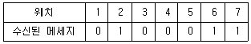
- 0100010
- 0100001
- 1100011
- 0110011
(정답률: 알수없음)
54. 전송채널의 용량과 가장 관련 깊은 것은?
- 전송로의 정전용량
- 전송로의 특성임피던스
- 전송신호의 위상
- 전송로의 신호 대 잡음비
(정답률: 알수없음)
55. 문자동기방식에서 본문의 시작을 표시하는 문자 기호는?
- SYN
- SOH
- STX
- ETX
(정답률: 알수없음)
56. 단말에서 단말 입출력장치와 데이터 전송장치, 중앙에서 데이터 전송장치와 통신제어 장치등을 전기적으로 직접 결합한 방식은?
- ON - LINE SYSTEM
- OFF - LINE SYSTEM
- PROGRAM STORE SYSTEM
- Polling SYSTEM
(정답률: 알수없음)
57. 광케이블의 설명으로 맞지 않는 것은?
- 대역폭이 넓어 채널당 경제성이 있다.
- 접속율이 좋아 유지보수가 간단하다.
- 전기적인 잡음에 영향을 받지 않는다.
- 크기가 적고 가벼워서 설치비용이 적게 든다.
(정답률: 알수없음)
58. 동기식 전송에 이용되는 것 중 가장 효율적인 에러체크 방식은?
- LRC(Longitudinal Redundancy check)
- VRC(Vertical Redundancy check)
- CRC(Cyclic Redundancy check)
- ARQ(Automatic Repeat Request)
(정답률: 알수없음)
59. 다음 그림과 같은 신호의 이름은?
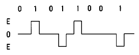
- 단류 NRZ
- 복류 RZ
- AMI
- Dicode
(정답률: 알수없음)
60. 단일모드에 비하여 다중모드 광섬유 케이블(multi mode fiber)에 대한 다음 설명 중 잘못된 것은?
- 전송되는 모드가 여러개이다.
- 장거리 광케이블로 사용된다.
- 모드간 간섭이 생긴다.
- 제조 및 접속이 용이하다.
(정답률: 알수없음)
4과목: 전자계산기일반 및 정보설비기준
61. 기간통신사업자의 이용약관 변경 명령권자는?
- 통신위원회위원장
- 정보통신부장관
- 한국전기통신공사장
- 재정경제부장관
(정답률: 알수없음)
62. 마이크로 컴퓨터에서 시스템 버스 중 틀린 것은?
- data bus
- address bus
- control bus
- I/O bus
(정답률: 알수없음)
63. 전기통신역무별로 요금 및 이용조건을 정한 내용은?
- 통신규약
- 이용약관
- 기술기준
- 가입청약
(정답률: 알수없음)
64. 통신설비의 기술기준에서 정한 음성주파수의 대역폭은?
- 300[Hz] 미만
- 300~3400[Hz]
- 300~3400[kHz]
- 300~3400[MHz]
(정답률: 알수없음)
65. 정보화촉진기본법의 목적에 포함되지 않는 것은?
- 국민생활의 질을 향상시킨다.
- 전산망의 보급확장을 실현한다.
- 국민경제의 발전에 이바지한다.
- 정보통신산업의 기반을 조성한다.
(정답률: 알수없음)
66. 캐시 메모리를 사용하는 이유로 가장 타당한 것은?
- 평균 액세스 시간이 증가시키기 위해 사용한다.
- 프로그램의 총 실행 시간을 단축시킬 수 있다.
- 기억 용량이 증가한다.
- 기억 용량이 감소한다.
(정답률: 알수없음)
67. 다음 중 명령어의 주소부에 데이터를 직접 넣어주는 방식은?
- 절대 번지 지정
- 즉치(immediate)번지 지정
- 상대 번지 지정
- 레지스터 번지 지정
(정답률: 알수없음)
68. ITU-T의 권고안 표준시리즈 중에서 I 시리즈에 해당되는 내용은?
- 데이터 통신망
- 텔레매틱 통신 프로토콜
- 종합정보 통신망
- 디지털 통신망
(정답률: 알수없음)
69. 시프트 레지스터에 저장된 데이터를 좌로 1비트 이동 후 데이터 값은? (단, 자리넘침은 없음)
- 원래 데이터의 2 배
- 원래 데이터의 4 배
- 원래 데이터의 1/2 배
- 원래 데이터의 1/4 배
(정답률: 알수없음)
70. 정보전송레벨을 절대단위로 나타낸 것은?
- dB
- dBm
- Nep
- Watt
(정답률: 알수없음)
71. 다음 중 CPU가 수행하는 4개 사이클(cycle)에 속하지 않는 것은?
- Fetch cycle
- Execute cycle
- Interrupt cycle
- jump cycle
(정답률: 알수없음)
72. 인터럽트를 발생시키는 장치들을 직렬로 연결시키는 하드웨어적인 우선 순위 제어 방식은?
- hand shaking
- daisy chain
- spooling
- polling
(정답률: 알수없음)
73. 순서도의 작성 시기는?
- 입.출력 설계 후
- 타당성 조사 후
- 프로그램 코딩 후
- 자료 입력 후
(정답률: 알수없음)
74. 정보통신설비 시설공사에서 하도급의 원칙에 관한 규정이 아닌 것은?
- 일괄하도급 금지
- 하도급 공사는 연대책임
- 재하도급 금지
- 일부하도급시 사전구두 승인
(정답률: 알수없음)
75. 정보화촉진등에 관한 사항을 심의하기 위하여 국무총리 소속하에 설치한 기관은 ?
- 통신위원회
- 정보통신진흥위원회
- 통신정책위원회
- 정보화추진위원회
(정답률: 알수없음)
76. 사용자가 희망하는 두 지점 사이에 교환망을 거치지 않고 직접 연결한 회선은?
- 일반교환회선
- 정보교환회선
- 메시지교환회선
- 특정통신회선
(정답률: 알수없음)
77. 미국 표준 코드로서 1개의 패리티 비트와 3개의 존 비트, 그리고 4개의 디지트 비트로 구성되는 코드체계는?
- 8421 코드
- ASCII 코드
- Hamming 코드
- EBCDIC 코드
(정답률: 알수없음)
78. 정보통신공사업자 이외의 자가 시공할 수 있는 경미한 공사 범위에 해당되지 않는 것은?
- 아마추어 무선국
- 5회선 이하의 구내통신선로설비
- 자가정보통신설비
- 간이 무선국
(정답률: 알수없음)
79. 읽고 쓰기가 가능하고 전원이 소멸되어도 기억된 내용이 지워지지 않는 RAM과 같은 ROM은?
- 캐시메모리
- 플레시메모리
- 가상메모리
- 연상기억장치
(정답률: 알수없음)
80. 자료형 중에서 가장 적은 비트를 필요로 하는 것은?
- 실수형 자료
- 정수형 자료
- 논리형 자료
- 문자형 자료
(정답률: 알수없음)
에미터폴로워는 입력신호를 증폭하지 않고 그대로 출력하는 회로로, 입력신호가 출력으로 전달되는 과정에서 전압이 손실되지 않는다. 따라서 입력임피던스는 크고 출력임피던스는 작다.
입력임피던스가 크다는 것은 입력신호가 회로에 들어올 때 회로에 부하를 주지 않고 쉽게 들어올 수 있다는 것을 의미한다. 반면 출력임피던스가 작다는 것은 출력신호가 회로를 떠날 때 회로에 부하를 주지 않고 쉽게 떠날 수 있다는 것을 의미한다. 이러한 특성으로 인해 에미터폴로워는 다른 회로에 신호를 전달하는데 유용하게 사용된다.